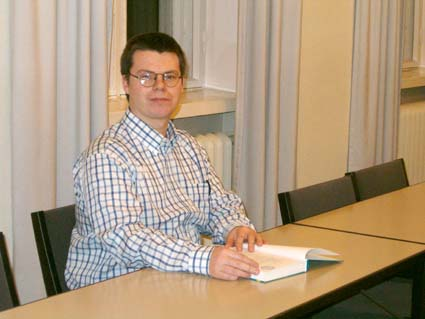

Jo pienenä olin aivan liian kiinnostunut numeroista ja ensi alkuun nimenomaan niistä. Laskeminen oli kivaa jo ennen ala-astetta. Vasta paljon myöhemmin ymmärsin, ettei minusta koskaan tule matemaatikkoa.
Kirjoittaminen taas oli paljon vaikeampaa. Ala-asteen opettajat alkoivat varmasti jo epäillä kykyäni tuottaa kunnollista tekstiä. Ala-asteella ymmärsin myös, että taipumukseni kohdistuvat selvästi luonnontieteisiin, ja ahminkin kaikkea kotoa ja kirjastosta löytyvää. Samalla tutustuin tieteiskirjallisuuteen ja paranormaalin maailmaan. Tuolloin suodattimeni eivät olleet edes nykyisessä kunnossaan, joten en oikein ymmärtänyt kiintoisien tarinoiden ja faktojen eroa. Siten esimerkiksi ”Valitut palat” ja monet muutkin vetivät minua höplästä.
Yläasteen loppupuoliskolla matemaattiset taipumukseni sekä tutustuminen koviin luonnontieteisiin alkoivat vaikuttaa. Ehkäpä painettu sana ja uutiset eivät aina olekaan totta. Lisäksi asian esitysmuoto vaikuttaa ratkaisevasti uskottavuuteen. Tähtitiede muistutti taivaalla loistavien valopisteiden olevan todellisuudessa varsin kaukana olevia aurinkoja, mikä pani epäilemään kontaktihenkilöitä ja ufotarinoita. En kuitenkaan osannut vielä sanoa, miksi telepatia on niin epätodennäköistä tai ennustaminen niin kohtuuttoman vaikeaa.
Lukiossa luisuin vähitellen, mutta vastustamattomasti, luonnontieteiden helmaan. Vähitellen, miljoonien ihmisten väittelyn tuloksena kasvava tietomäärä oli varmasti paras arvaus maailman toiminnalle. Erityisesti fysiikka ja matematiikka tekivät minuun vaikutuksen, koska kuvittelin jo ymmärtäväni niistä kohtuullisen paljon. Lukija arvannee, etten ollut kovin oikeassa.
Eräs tärkeä vaikuttajani oli tuolloin ”Alivaltiosihteeri”, jonka radiohupailut piristivät hyppytuntejani. Frangén, Heikura ja Liikka ovat hyviä skeptikon kouluttajia – luultavasti tahallaan, vaikkei sitä koskaan tiedä.

Lopullisen romahduksen skeptikon ominaistilaan aiheutti Jyväskylän aktiivinen 90-luvun alkupuolisko. Aloitin fysiikan opiskelut syksyllä 1992, jolloin törmäsin myös Jyväskylän Skepsis-toimintaryhmään, jonka vetäjinä toimivat Kari Saari ja Otto J. Mäkelä. Yhdessä tutuistuimme moniin aiheisiin – spiritismissä käytettävästä Ouija-laudasta hypnoosiin. Kävimme myös keskusteluja paikallisen parayhdistyksen ihmisten kanssa. Olin käytännössä myyty, sillä fysiikan opintojen eteneminen muovasi maailmankuvaani voimakkaasti naturalistiseen suuntaan.
Skeptismistä muotoutui erittäin kiinnostava harrastus, jonka vivahteikkuus oli aivan uutta minulle. Paranormaaleja ilmiöitä olikin todella paljon ja moniin pystyi tutustumaan Jyväskylässä aktiivisen parayhteisön ansiosta. Kävimme pienemmällä tai suuremmalla porukalla monissa tilaisuuksissa ja kuulimme monia alan nimiä kuten Rauni-Leena Luukasta, Juhan af Grannia, Kalevi Riikosta sekä monia muita.
Tärkeimmät tapahtumat skeptikoiden kannalta olivat kuitenkin yliopiston etnologian laitoksen järjestämä ufoseminaari vuonna 1995 ja James Randin vierailu Jyväskylän Kesässä 1997 sekä muut samaan aikaan järjestetyt luennot ja tapahtumat. Randin tapaaminen oli myös huomattava elämys.
Aktiivinen ja osallistuva skeptismini alkoi tyrehtyä vuoden 1997 tienoilla. Olin tutustunut jo niin moneen erilaiseen ilmiöön, että saturoituminen oli lähellä. Onneksi skeptismin kenttä on laaja, eikä kaikkien skeptikoiden tarvitse henkilökohtaisesti kaivaa pohjamutia.
Yritän pysyä ilmiöistä ajan tasalla lähinnä lukemalla, ja puuttua asioihin vain tarvittaessa. Fyysikon koulutus auttoi huomattavasti tapahtumissa, jotka johtivat Huuhaa-palkinnon antamiseen Keskisuomalaisen Kunnonsuomalainen-liitteelle vuonna 1998. Toinen tärkeä vaikutusmekanismi on ollut osallistuminen Skepsis ry:n järjestämien esitestien suunnitteluun ja toteutukseen. Toivottavasti skeptikon kujeet eivät lopu tähän.
Odotitte tietysti tunnustuksia paranormaaleista kokemuksista. Niitä ei valitettavasti juurikaan ole. Joitain outoja tapauksia toki löytyy, joskin ne ovat oleellisesti kaikki pään sisäpuolella tapahtuneita. En ole edes kunnollista ufohavaintoa tehnyt, paitsi unessa. Uniin liittyvät myös moninkertaiset heräämiset ja valheellinen tilanteen toistuminen. Jälkimmäisissä lienee kyse muistin virheellisestä toiminnasta.
Lopuksi kerrottakoon pari anekdoottia matkan varrelta:
Noin vuonna 1995 Rauni-Leena Luukanen-Kilde kertoi minulle henkilökohtaisesti, miksei yleisesti tiedetä, että kuun takapuolella vallitsee paksu ilmakehä ja että sinne tehdään jatkuvia avaruuslentoja: kyseessähän on tietysti se kuuluisa tiedemiesten salaliitto. Mutta kun kysyin, miksei siitä kerrota edes tiedemiehen aluille mitään, paljasti hän Suomessa vain kahden (2) ihmisen tietävän totuuden asiasta. Tähän ei tietenkään laskettu sitä valtavaa kuulijajoukkoa, jolle hän kyseisen tiedon oli välittänyt.
Lupauksia Maan ulkopuolisen älyllisen olennon vierailusta on kuultu vaikka kuinka monta. Aina ne ovat olleet tulossa ihan kohta, muutaman vuoden sisällä. Sekä Grann että Luukanen-Kilde olivat melkoisen varmoja vuodesta 1997 tai viimeistään 1998, mutta jälkimmäisestäkin on vierähtänyt jo viisi vuotta.
Ilmeisesti värähtelytasomme ei sitten ole vieläkään noussut riittävästi.